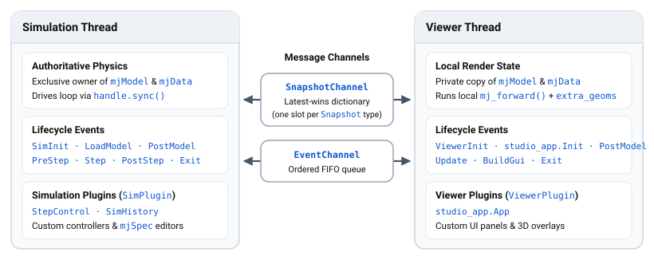
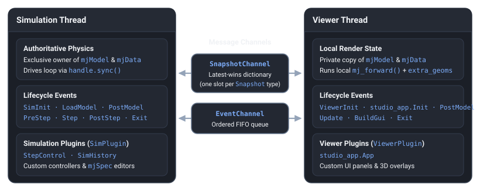

架构#
备注
本页由 AI（Claude Sonnet）根据 MuJoCo 官方英文文档（2026-11-16 版）翻译，仅供学习参考；如有出入，以英文原版为准。术语对照见资料包中的 术语表.md 。
MuJoCo Studio 的架构建立在三个核心理念之上：
仿真与可视化解耦：物理仿真与 UI／渲染（rendering）运行在不同的线程上，不共享任何可变状态，仅通过带类型的 Snapshot 与 Event 消息通道 进行通信。因此，任何 Python 插件 无需修改即可同时用于本地的 NativeViewer 窗口和远程的 WebViewer 浏览器会话。
Decoupled simulation and visualization: Physics simulation and UI/rendering run on separate threads with no shared mutable state, communicating strictly through typed Snapshot and Event message channels. Any Python plugin therefore works unchanged against both a local NativeViewer window and a remote WebViewer browser session.通过插件实现可组合的扩展性：内置功能——包括标准的 Studio UI（
studio_app.App）、实时物理步进（step_control.StepControl）以及轨迹历史回放（sim_history.SimHistory）——都实现为模块化的 查看器与仿真插件，应用程序可以对其进行混合搭配、替换，或通过自定义 UI 面板、3D 叠加层和步进后端加以扩展。Composable extensibility via plugins: Built-in features—including the standard Studio UI (studio_app.App), real-time physics stepping (step_control.StepControl), and trajectory history scrubbing (sim_history.SimHistory)—are implemented as modular viewer and simulation plugins that applications can mix, replace, or extend with custom UI panels, 3D overlays, and stepping backends.共享的 C++ 组件：核心 UI 面板、3D 视口交互、物理步进节奏控制、轨迹历史缓冲区以及 Filament 渲染都实现为模块化的 C++ 库，既可编译为原生机器码（附带 Python 绑定），也可编译为 WebAssembly（附带 JavaScript 绑定），从而确保在 C++、Python 和浏览器目标之间行为一致。
Shared C++ components: Core UI panels, 3D viewport interaction, physics step pacing, trajectory history buffers, and Filament rendering are implemented as modular C++ libraries that compile both to native machine code (with Python bindings) and to WebAssembly (with JavaScript bindings), ensuring consistent behavior across C++, Python, and browser targets.
线程模型#
在 Python 中，Studio 将物理仿真与渲染及 UI 呈现分离到两个执行上下文中，二者通过 消息通道
（SimEndpoint ↔ ViewerEndpoint）连接，使查看器和仿真可以运行在不同的线程上，或者运行在相互独立的进程中：
SimEndpoint ↔ ViewerEndpoint), allowing the viewer and
simulation to run on separate threads or in independent processes:



这种解耦设计提供了三项架构保证：
零共享状态争用：与旧版的 被动查看器 不同——后者要求用户脚本在修改 mjModel 或 mjData 之前先获取
with viewer.lock():——Studio 的仿真线程独占权威的物理结构体。每一步之后，ViewerHandle.sync()会通过 mj_getState （mjSTATE_INTEGRATION）将扁平的积分状态向量提取到一个不可变的StateSnapshot(state, state_sig)中。查看器线程通过 mj_setState 将最新的快照应用到它私有的 mjData 副本上，并以显示刷新率在本地运行 mj_forward，而不会阻塞物理计算。Zero shared-state contention: Unlike the legacy passive viewer, which required user scripts to acquirewith viewer.lock():before mutating mjModel or mjData, Studio’s simulation thread exclusively owns the authoritative physics structs. After each step,ViewerHandle.sync()extracts the flat integration state vector via mj_getState (mjSTATE_INTEGRATION) into an immutableStateSnapshot(state, state_sig). The viewer thread applies the latest snapshot to its private copy of mjData via mj_setState and runs mj_forward locally at display refresh rate without blocking physics.后台查看器守护线程：原生 和 Web 两种 Python 启动器都会在后台守护线程上启动查看器循环 (launch_thread.py)，同时在调用线程上运行仿真同步循环或调用方的
with代码块。查看器线程上未处理的异常会被立即记录，并在ViewerHandle.close()运行时在仿真线程上重新抛出。Background viewer daemon thread: Both native and web Python launchers spawn the viewer loop on a background daemon thread (launch_thread.py) while running the simulation sync loop or callerwithblock on the calling thread. Unhandled exceptions on the viewer thread are logged immediately and re-raised on the simulation thread whenViewerHandle.close()runs.统一的插件契约：由于 查看器插件 和 仿真插件 仅通过带类型的
Snapshot和Event消息通信，而不通过共享内存，因此插件类无需修改即可同时用于原生桌面窗口和远程的 WebViewer 浏览器会话。Unified plugin contract: Because viewer plugins and simulation plugins communicate exclusively through typedSnapshotandEventmessages rather than shared memory, plugin classes work unchanged across native desktop windows and remote WebViewer browser sessions.
Python 与 C++#
Studio 会根据各运行环境调整其执行模型：
Python（
mujoco.studio）：仿真端点和查看器端点各自持有独立的 mjModel 与 mjData 实例，并仅通过有方向的Snapshot和Event通道通信。C++ 桌面端（mujoco::studio::App）：在专用的后台线程上运行物理计算，并与主 UI 和渲染循环同步。
C++ Desktop (mujoco::studio::App): Runs physics on a dedicated background thread synchronized with the main UI and rendering loop.C++ WebAssembly（MuJoCo Live）：在浏览器单线程的
requestAnimationFrame循环内，依次驱动物理更新、Dear ImGui 布局和 Filament WebGL 渲染。C++ WebAssembly (MuJoCo Live): Drives physics updates, Dear ImGui layout, and Filament WebGL rendering sequentially inside the browser’s single-threadedrequestAnimationFrameloop.
C++ 组件#
在 Python SDK 和 C++ 应用程序之下，是位于 studio/ 中的一层共享的可复用 C++ 组件：
UI 与交互（ux/）：内置的 Dear ImGui 面板——模型层级、物理与渲染选项、执行器控制、关节滑块、传感器与求解器曲线图、
SimHistory时间线拖动条、Console、画中画视图，以及imgui_widgets.h中的自定义控件——此外还有interaction.h中的 3D 鼠标拾取、相机运动和刚体扰动。通过mujoco.studio.ux暴露给 Python，该模块在执行 C++ 代码期间会释放 Python GIL。UI & interaction (ux/): Built-in Dear ImGui panels—model hierarchy, physics and rendering options, actuator controls, joint sliders, sensor and solver plots, theSimHistorytimeline scrubber,Console, picture-in-picture views, and custom widgets inimgui_widgets.h—along with 3D mouse picking, camera motion, and body perturbation ininteraction.h. Exposed to Python viamujoco.studio.ux, which releases the Python GIL during C++ execution.仿真状态管理（sim/）：通过
StepControl实现实时步进节奏控制和控制噪声，通过SimHistory实现环形缓冲区轨迹记录与回放，通过SimProfiler实现性能分析，通过ModelHolder实现模型生命周期管理，并由 Python 的step_control和sim_history模块进行封装。Simulation state management (sim/): Real-time step pacing and control noise viaStepControl, ring-buffer trajectory recording and scrubbing viaSimHistory, profiling viaSimProfiler, and model lifecycle management viaModelHolder, wrapped by Python’sstep_controlandsim_historymodules.渲染与窗口管理（hal/、render/）：通过
FilamentRenderer和ModelScene实现硬件抽象的 Filament 渲染，以及跨 OpenGL、Vulkan 和 WebGL 的 SDL2 与离屏窗口管理。
由于这些 C++ 库可以编译为原生二进制文件，通过 pybind11 绑定到 Python，并通过 Emscripten 编译为带 JavaScript 绑定的 WebAssembly，因此任何需要在 C++、Python 和
JavaScript/WebAssembly 各端之间共享的组件或自定义控件，都应当用 C++ 实现，并绑定到 Python 和 JS。纯 Python 插件在主机 CPU 上执行——在 WebViewer
中将其 UI 绘制列表流式传输到浏览器——而 C++ 组件既可以在主机上原生运行，也 可以在客户端的 WebAssembly 浏览器应用内运行，例如 MuJoCo Live 和 WebViewer 浏览器客户端。
pybind11, and compile to WebAssembly via
Emscripten with JavaScript bindings, any component or custom widget that needs to be shared across C++, Python, and
JavaScript/WebAssembly surfaces should be implemented in C++ and bound to Python and JS. Pure Python plugins execute on
the host CPU—streaming their UI draw lists to the browser in WebViewer—whereas C++
components can run natively on the host and client-side inside WebAssembly browser apps such as MuJoCo Live and the WebViewer browser client.消息传递#
由于仿真循环和查看器循环运行在不同的线程上，且不共享可变状态（参见 线程模型），所有状态更新和命令都以 messages.py 中定义的带类型消息的形式跨越端点边界。
Snapshot 与 Event#
通信分为两个 Message 基类，二者具有不同的投递语义。按照惯例，自定义消息子类以 *Snapshot 或 *Event 结尾：
Message base classes with distinct delivery semantics. By convention, custom
message subclasses end in *Snapshot or *Event:基类 Base Class |
通道类型 Channel Type |
投递保证 Delivery Guarantee |
示例 Examples |
|---|---|---|---|
|
SnapshotChannel is a latest-wins dictionary with one slot per Snapshot subclass, keyed by type(msg). |
取出（drain）时，每种类型仅投递最新的一个快照。 Only the most recent snapshot of each type is delivered on drain. |
|
|
EventChannel is a strictly ordered FIFO queue. |
每个入队的事件都会按顺序投递，不会丢弃任何事件。 Every queued event is delivered in order; no event is dropped. |
|
选择类型#
在为 GUI 控件或插件通信设计自定义消息时：
对于滑块、开关和设置等连续的 GUI 选项，使用
Snapshot，此时消息携带完整的当前值，且只有最新值才有意义，例如StepControlSnapshot、MjOptionSnapshot，或某个插件自己的FooConfigSnapshot。如果用户拖动滑块时查看器的渲染速度快于仿真的步进速度，中间值会自动合并，而不是排队堆积。Use aSnapshotfor continuous GUI options such as sliders, toggles, and settings where a message carries the complete current value and only the latest value matters, such asStepControlSnapshot,MjOptionSnapshot, or a plugin’s ownFooConfigSnapshot. If the viewer renders faster than the simulation steps while a user drags a slider, intermediate values coalesce automatically instead of queuing up.对于离散的 GUI 按钮动作和一次性命令，使用
Event，例如ResetEvent、SingleStepEvent、RequestPauseEvent、LoadModelEvent和KeyframeEvent；此外，当同一个类的不同局部更新会在SnapshotChannel的按类型槽位中相互覆盖时，也应使用Event——例如，StateEvent(state, state_sig)会应用有针对性的状态覆盖，其state_sig位掩码各不相同，因此每个分量都会按顺序应用。Use anEventfor discrete GUI button actions and one-shot commands such asResetEvent,SingleStepEvent,RequestPauseEvent,LoadModelEvent, andKeyframeEvent, and when distinct partial updates of the same class would clobber one another inSnapshotChannel’s per-type slot—for example,StateEvent(state, state_sig)applies targeted state overrides whosestate_sigbitmasks differ so each component is applied in order.
有关按时间顺序排列的 生命周期事件表、基于差异的同步 和 处理器优先级，请参见 Python 插件。